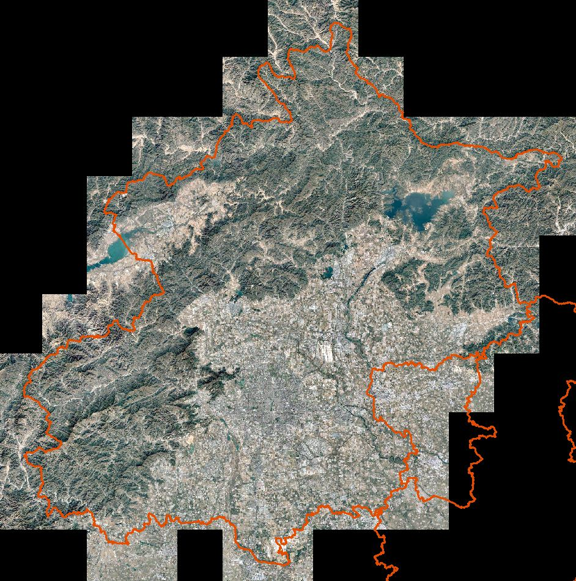
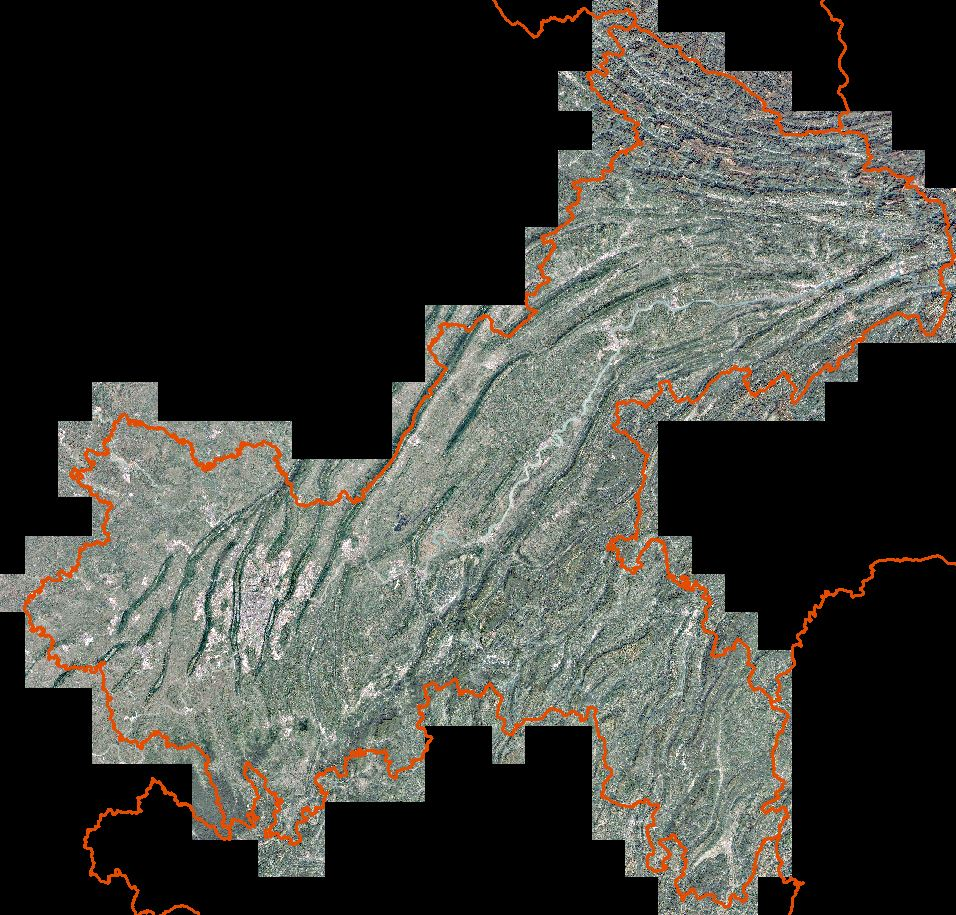
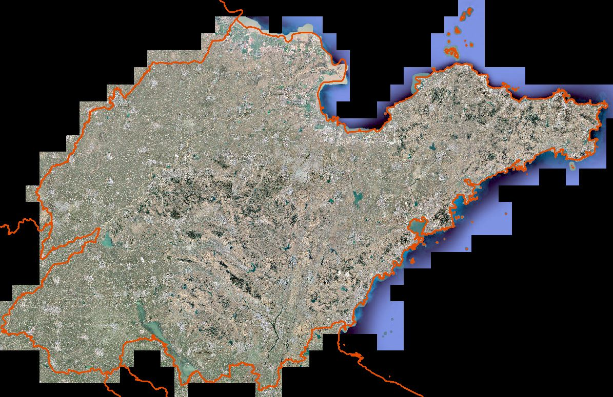
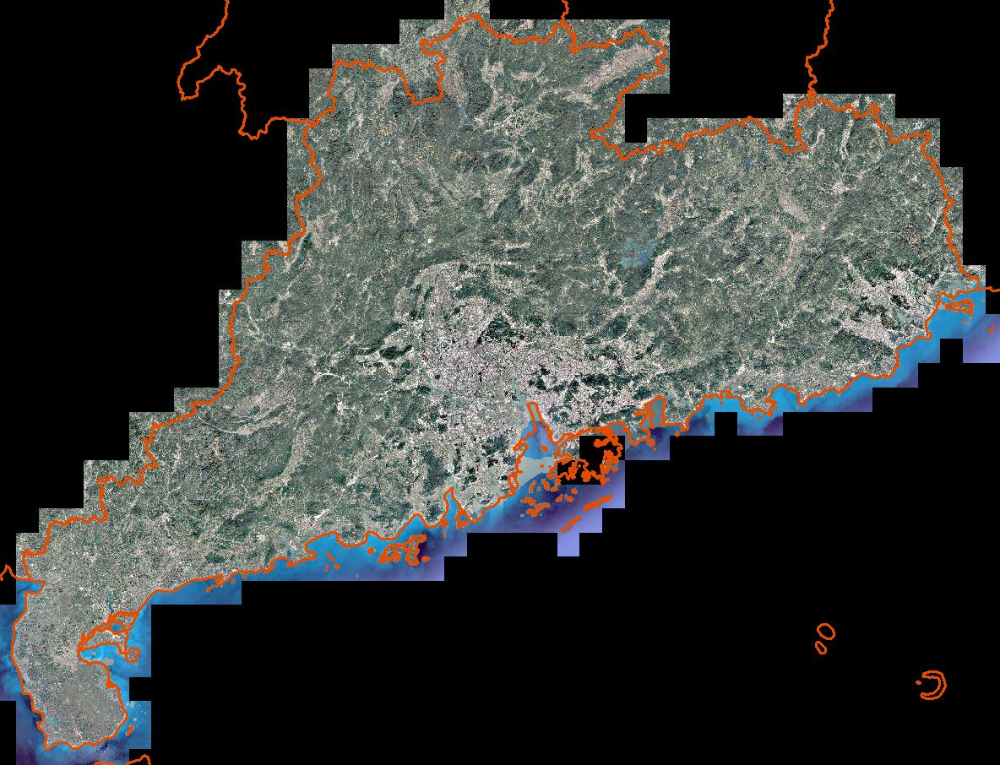
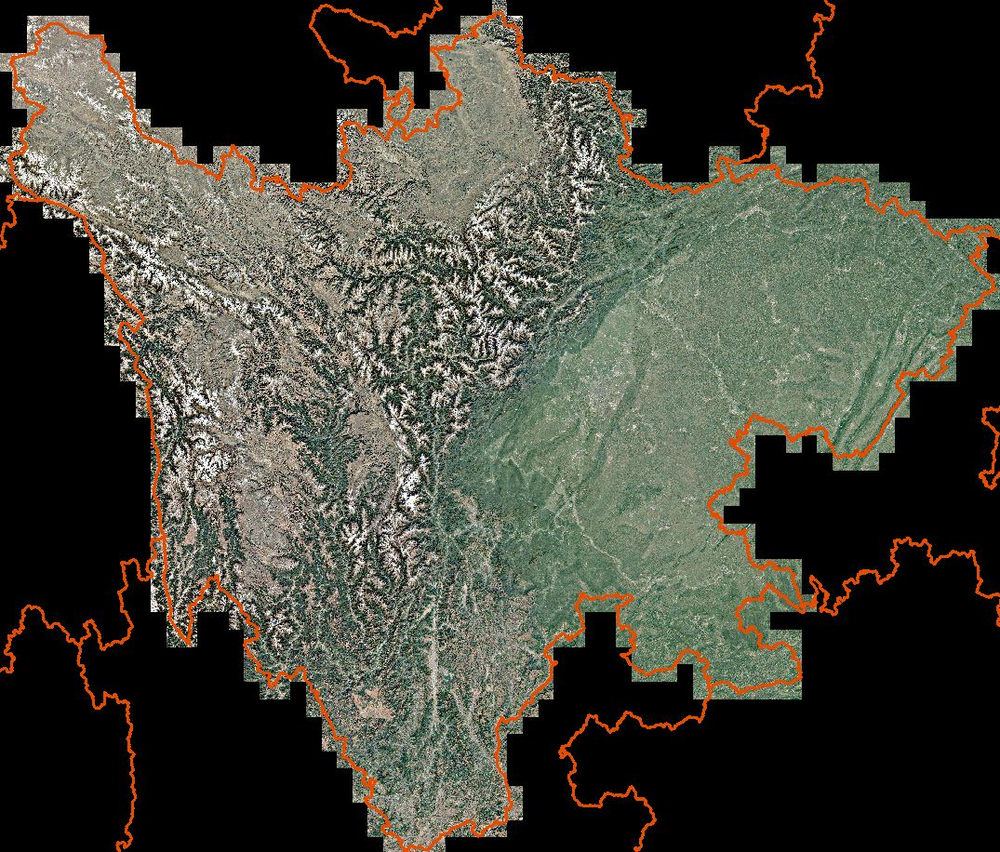
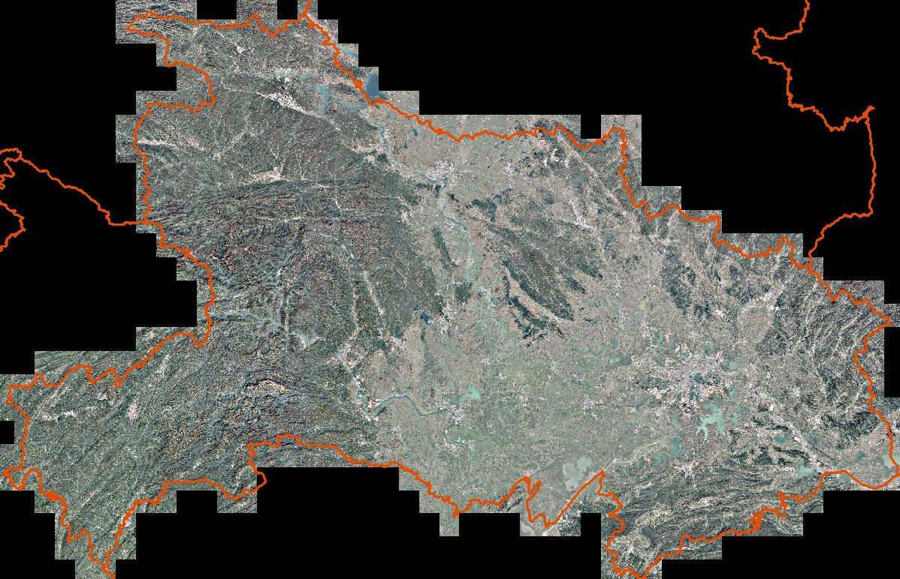

全国各省谷歌地球无偏卫星影像数据
Google Earth remote sensing image data of China
1. 数据介绍
谷歌地球（Google earth）的卫星影像，并非单一数据来源，而是卫星影像与航拍的数据整合。其卫星影像部分来自于美国DigitalGlobe公司的QuickBird（快鸟）商业卫星与EarthSat公司（美国公司，影像来源于陆地卫星LANDSAT-7卫星居多），航拍部分的来源有BlueSky公司（英国公司，以航拍、GIS/GPS相关业务为主）、Sanborn公司（美国公司，以GIS、地理数据、空中勘测等业务为主）、美国IKONOS及法国SPOT5。
其中SPOT5可以提供解析度为2.5米的影像、IKONOS可提供1米左右的影像、而快鸟就能够提供最高为0.61米的高精度影像，是全球商用的最高水平。
本站提供全国各省（市、自治区、特别行政区）范围的中分辨率影像数据下载。
2. 数据属性
空间范围：全国（各省）
时间范围：约2020-2022
空间分辨率：75m
数据类型：栅格|GeoTIFF
投影坐标：WGS 84
其他说明
无偏影像数据。
如果有需要更高分辨率影像数据（最高可达厘米级），可以联系邮箱 gispie@163.com
3. 数据预览图
| 北京 | 重庆 | 山东 |
|  |  |  |
| 广东 | 四川 | 湖北 |
|  |  |  |
4. 数据下载
全国各省谷歌地球无偏卫星影像数据
| 编号 | 省份 | 年份 | 数据源 | 分辨率 | 数据大小 | 提取码 | 下载链接 |
|---|
建议使用Google浏览器，IE内核浏览器可能不正常显示下载按钮等！
Fighting, GISer!
最新博文